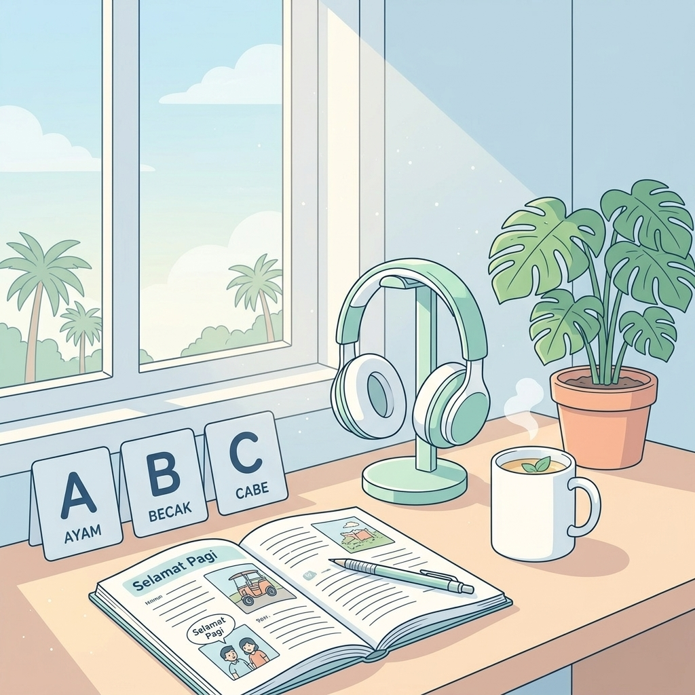
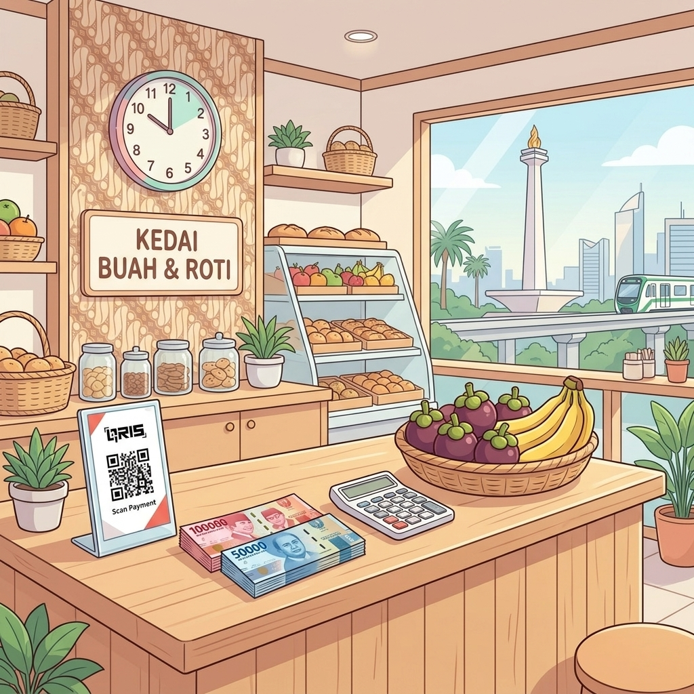

印尼十大名城群島跨島生活實戰旅程
告別傳統死板教科書！跨越雅加達、泗水、萬隆、棉蘭、三寶瓏、巨港、望加錫、日惹、峇里島與萬丹印尼十大名城島嶼！全面導入中+印雙語播放輔助機制、稱謂關係計算器、3D 字卡與智能麥克風跟讀打分，從零基礎小白直通全印尼跨島生活無障礙！

給印尼文小白的 3 大安心超能力（全亞洲最好學的語言！）
印尼語採用拉丁字母，拼音即讀音；無聲調、無動詞時態曲折、語序與中文高度一致！
5 階漸進式闖關地圖

Level 0: 零基礎發音與拼讀 (Alfabet)
26 字母、C/J/R/K 關鍵音、雙母音與倒數第二音節重音原則。
Level 1: 稱謂社交計算器與核心語法
長幼尊卑 (Mas/Mbak/Pak/Bu)、SVO 語序、兩大否定詞 (Tidak vs Bukan)。

Level 2: 數字時間與印尼盾轉換
0 到百萬計數、Rp 貨幣讀音換算器、星期日期與時間生活表達。
Level 3: 30 大實戰會話 (8 大生活情境分類 x 中印雙語朗讀)
交通、美食、住宿、購物、社交、旅遊、商務、醫療應急全情境涵蓋，支援雙語循序播放與盲聽測驗。
Level 4: 智能跟讀打分與 Bahasa Gaul 口語
麥克風即時語音比對評分、meN- 詞綴積木與 TikTok 網民迷因密碼庫。
印尼十大名城群島生活文化導覽 (Peta 10 Kota Nusantara)
涵蓋雅加達 (Jakarta)、泗水 (Surabaya)、萬隆 (Bandung)、棉蘭 (Medan)、三寶瓏 (Semarang)、巨港 (Palembang)、望加錫 (Makassar)、日惹 (Yogyakarta)、峇里島 (Bali)、萬丹 (Banten)！點選探索各城 Wikipedia 權威數據、著名地標景致、代表美食與道地方言發音：
印尼語字母與發音完整系統 (Alfabet & Fonetik)
印尼語使用 26 個拉丁字母，無聲調，重音普遍在倒數第二音節。點選子標籤探索母音辨析、關鍵子音、音節拼讀矩陣與發音規則！
例如 Cinta 唸成 "Chin-ta"（愛），Cuci (Chu-chi 洗)，絕不發 /k/ 或 /s/！
如 Rendang, Rumah。初學者若彈不出來，可先以清晰的「ㄌ/ㄦ」過渡。
在字尾如 Tidak (Ti-da'), Bapak (Ba-pa') 聲帶迅速關閉，不噴氣，乾脆短促。
26 字母發音庫 (點擊直接試聽)
印尼語人稱稱謂計算器 (Kalkulator Sapaan)
印尼文化中稱謂至關重要！選對稱謂能拉近彼此距離，避免失禮。點選情境立即獲取稱呼與中印雙語範例！

印尼社交長幼尊卑哲學 (Sistem Kekerabatan)
印尼人非常重視輩份與社會尊重，日常交流中極少直接用「你 (Kamu)」呼喚長輩或初識者，而是親切稱呼對方為 Bapak / Pak (先生/長輩)、Ibu / Bu (女士/母親輩)、Mas (大哥/平輩男性) 或 Mbak (大姐/女性)。
智能稱謂快選矩陣 (一秒找出最佳稱呼)
選擇對象條件，系統將立即為您計算最得體的「對方稱謂」與「自己自稱」：
8 大經典社交場景稱謂速查表
核心語法與句型 (Tata Bahasa Inti)
印尼語沒有動詞時態變化、無性別單複數曲折，語序與中文極為相似！

D-M 後置修飾原則 (Inverted Modifier)
印尼語核心名詞在前，形容詞在後。例如：Nasi (飯) + Goreng (炒) = Nasi Goreng (炒飯)；Mobil (車) + Merah (紅) = Mobil Merah (紅色的車)。

時間時態副詞軸 (Aspek Waktu)
動詞原形永遠不變！靠時間詞表達狀態：Sudah (已經/過去)、Sedang / Lagi (正在進行)、Akan / Mau (將要/未來)、Belum (尚未)。
D-M 後置修飾動態組裝台 (Diterangkan-Menerangkan)
中文「形容詞在前，名詞在後」；印尼語相反，「名詞核心在最前，修飾詞放後面」！點選切換觀察結構：
Tidak vs Bukan 否定詞即時秒殺判斷器
Tidak 用於否定「動詞 / 形容詞」（不/沒有）；Bukan 用於否定「名詞 / 身份 / 物品」（不是）。點點看判斷正確答案：
數字、時間與金錢交易 (Angka & Waktu)
掌握數字與印尼盾 (Rupiah) 計價，出門購物搭車暢行無阻！

印尼盾 (Rupiah) 去零速算法
印尼盾面額大：Ribu (千, 簡寫 k)、Juta (百萬, 簡寫 jt)。快速台幣換算：去掉三個 0 後除以 2（例如 50.000 Rp ≈ NT$ 25）。

印尼語「四段制」問候問好時間
Selamat Pagi (05-11 點早安) ➔ Selamat Siang (11-15 點午安) ➔ Selamat Sore (15-18:30 點傍晚好) ➔ Selamat Malam (18:30 後晚安)。
印尼盾 6 大常用紙鈔色卡速查 (點擊帶入發音)
在印尼生活購物靠「顏色認鈔票」最快！點擊任一張紙鈔立即聽標準印尼語讀法：
印尼盾 (Rupiah) 即時讀音生成器
輸入任何金額，立即查看印尼語標準讀法並點擊聽發音！
印尼四段制日常時間問候盤
印尼人不用「Good Afternoon」，而是分成四個不同時段問候：
基礎數詞 (0 - 1,000,000)
星期與常用時間副詞
核心單字庫與多維度學習記憶系統 (Vocab Flashcards)
精選 12 大生活分類、260+ 個高頻必備詞彙，支援「3D 翻轉字卡」、「記憶抽查測驗」、「單字自動連播」與「清單全覽」！
30 大現代實戰情境會話 (30 Situational Conversations)
依 8 大日常情境分類（交通、美食、住宿、購物、社交、觀光、商務、醫療），支援中印雙語朗讀、純印尼語播放、聽力盲聽模式與角色扮演測驗！
載入中...
實境角色扮演測驗 (Role-play Quiz)
載入題目中...
智能跟讀與發音評分系統 (Shadowing Engine)
支援麥克風即時語音辨識（Web Speech API）與自評流利度模式，即時計算相似度打分並獎勵經驗值！
詞綴積木系統與現代口語 (Imbuhan & Bahasa Gaul)
掌握印尼語的核心秘密「字根衍生」，並解碼 TikTok 網民迷因與 WhatsApp 縮寫！

印尼語詞綴大樹原理 (Pohon Kata Imbuhan)
印尼語有如一棵生命力旺盛的巨樹：「基礎字根 (Kata Dasar)」是樹根，加上前綴 (Awalan meN-/ber-/di-)、後綴 (Akhiran -kan/-an) 或環綴 (Konfiks ke-...-an/pe-...-an) 就像開枝散葉，衍生出無窮詞彙！
詞綴魔法動態組裝台 (Prefix + Root + Suffix)
點選前綴、字根、後綴，觀察單字如何從「動作」演變為「人物」、「結果」或「場所」：
8 大核心字根衍生樹 (Pohon Kata)
選擇一個基礎字根 (Kata Dasar)，展開完整衍生字庫：
meN- 前綴四大鼻音變音法則 (K/P/T/S 脫落)
正式語 (Baku) vs 雅加達口語 (Gaul) 對照
常用語氣助詞 (Partikel)
WhatsApp / 社群縮寫解碼庫
實用印尼社交聊天簡訊即時解碼器 (Gaul Decoder)
點選以下常見印尼年輕人或外送/司機聊天範例，立即解碼為標準印尼文 (Baku) 與中文解析：
印尼風土人情與生活生存必備手冊 (Budaya & Darurat)
全面掌握印尼群島宗教禮俗、飲食文化禁忌、殺價心理學與緊急呼救求生專線！

印尼共食文化 (Makan Bersama & Halal)
印尼人熱愛聚餐共食，在餐桌上互相分享佳餚、說笑交流是拉近情誼最快的方式。在穆斯林朋友面前請尊重 Halal 清真飲食規範。

聯合國教科文組織蠟染 (Batik Heritage)
Batik 是印尼國粹，週五在印尼被稱為「蠟染日 (Hari Batik)」，無論總統、官員或上班族皆會身著華麗蠟染出席正式與社交場合。
印尼跨島生存 Dos & Don'ts 禮儀紅綠燈
避開當地文化禁忌，做一個受歡迎的外國朋友：
必知 6 大文化禮俗與生活指南
官方緊急求救電話 (印尼全境通用)
一鍵緊急印尼語呼救句 (點擊直接高音量朗讀)
印尼語調音實驗室與彈舌音 R 專項訓練營 (Laboratorium Fonetik)
打破中文母語者發音瓶頸！透過四階段肌肉記憶漸進法、0.5x 慢速氣流拆解與經典繞口令突破舌尖顫音！

舌尖氣流共振科學 (Acoustic Trill Resonance)
印尼語的字母 R 是「齒齦顫音 (Alveolar Trill)」。關鍵在於完全放鬆舌尖，讓呼出的氣流自然衝擊舌尖產生高速振動。跟隨下方 4 階段訓練，每天練習 3 分鐘即可輕鬆掌握！
舌尖顫音 R (Trill) 四階段突破訓練營
依照順序進行肌肉引導訓練，每一步驟均提供 0.5x 慢速與標準速度示範：
句型重組積木實驗室 (Sentence Builder Lab)
依據中文提示，點選彩色單字積木拼出正確的印尼文語序，詞塊配有詞性提示，答對即可展開語法結構解析！
7 大生活與商務核心情境深度特訓 (Scenarios Mastery)
深度打通印尼生活與商業關鍵場景！每專題融合「⚡ 快速速成」、「📖 深度精講」、「💬 實戰角色對話」、「🎴 專屬 3D 複習閃卡」、「🛠️ 實戰小工具」與「🎯 隨堂速測」，全句中印語音朗讀零死角！
印尼語 10,000 最常見高頻核心字庫
嚴格對標國際權威 BIPA 標準與真實語料庫！依詞頻科學劃分 Top 1,000 (A1-A2)、Top 3,000 (B1)、Top 5,000 (B2) 與 Top 10,000 (C1-C2) 四大階梯，配備完整音節切分、詞性標籤、中印雙語發音與例句！
印尼成語俗諺與文化經典片語 (Peribahasa & Ungkapan)
掌握 52 條印尼最具代表性的智慧成語（如「有糖就有螞蟻」、「靜水流深」、「松鼠再會跳也有失足時」）與現代生活高頻片語（如「摔碎骨頭」、「洗眼睛」、「代罪羔羊」），深度探索字面義、比喻義與文化典故！
日常生活與商務高頻必備語句庫 (Pola Kalimat Sehari-hari)
涵蓋問候搭訕、道謝道歉、交通指引、點餐客製、購物議價、社交交友、委婉拒絕、商務辦公、醫療急救與數位生活 10 大生活維度，配備逐字文法拆解與中印雙語朗讀！